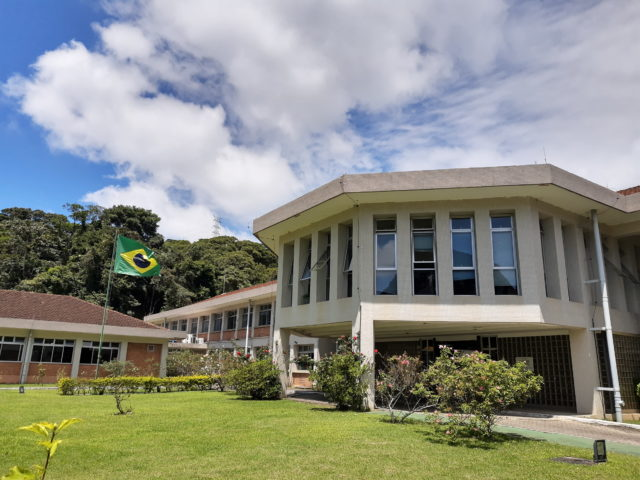
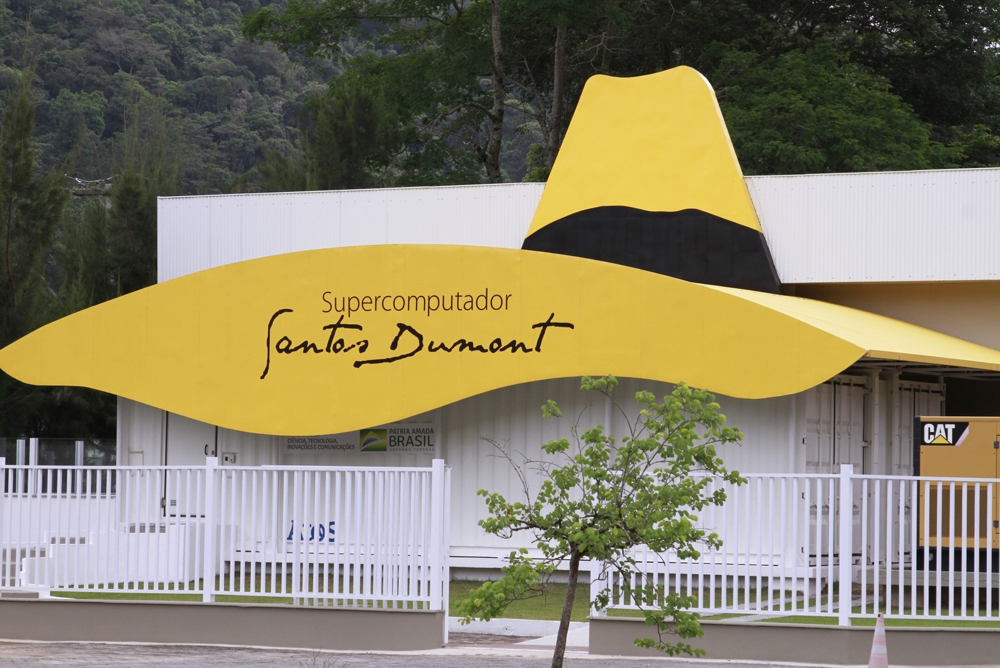

Sobre o evento
Organizado por discentes do programa de pós-graduação do LNCC, o EAMC é um evento que busca reunir discentes, docentes e pesquisadores envolvidos em modelagem computacional. O EAMC 2027 apresenta as diferentes áreas deste campo, desde Métodos Numéricos, Modelagem e Simulação de Sistemas, Mineração de Dados e Aprendizado de Máquina, até Biofísica Computacional, Análise e Classificação de Proteínas além de Análise Genética.

Propósito
Criado em 2007, o EAMC busca promover maior integração entre alunos, docentes, pesquisadores e demais profissionais da área de C&T. Seu principal objetivo é proporcionar um ambiente científico que promova a divulgação e a cooperação entre os pares, fomentando a multidisciplinaridade na formação de novos profissionais.

Áreas de interesse
O EAMC 2027 está alinhado com a pós-graduação do LNCC,
tendo 3 pilares fundamentais: matemática, computação e modelagem.
Assim os temas incluem, mas não se limitam, a:
• Matemática Aplicada;
• Modelagem de Sistemas Biológicos e Bioinformática;
• Inteligência Computacional e Ciência de Dados;
• Computação de Alto Desempenho;
• Modelagem e Simulação Computacional;

O EAMC 2027 volta na modalidade presencial!
Com muito entusiasmo informamos que poderemos realizar todo o evento de maneira presencial (com transmissão online) nas instalações do LNCC, localizado na Av. Getúlio Vargas, nº333 - Quitandinha, Petrópolis - RJ.